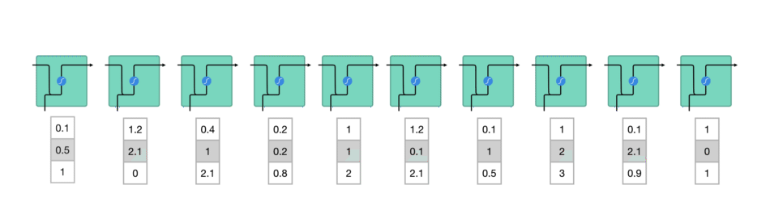
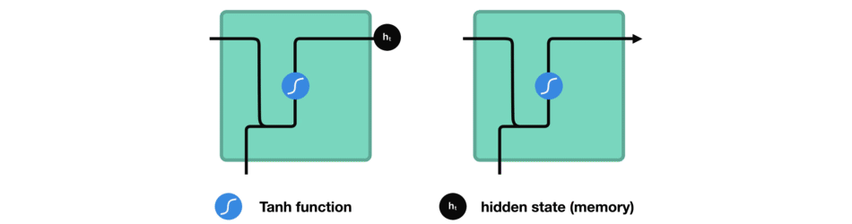
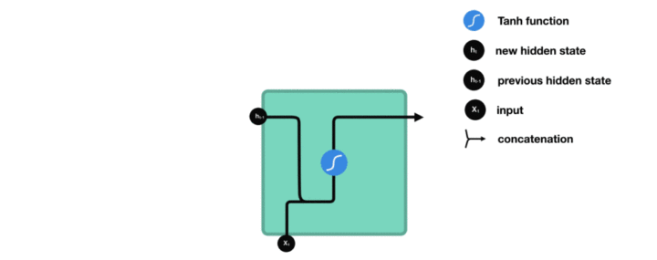
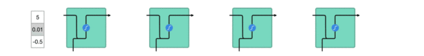
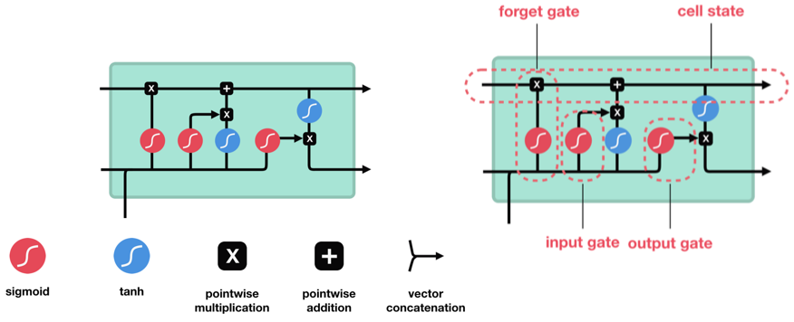
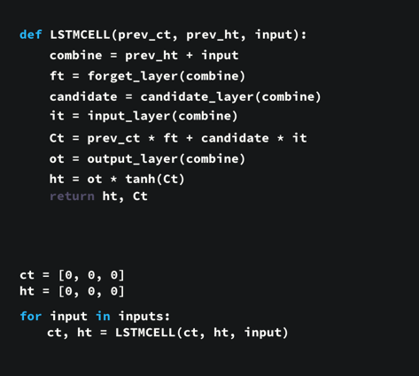
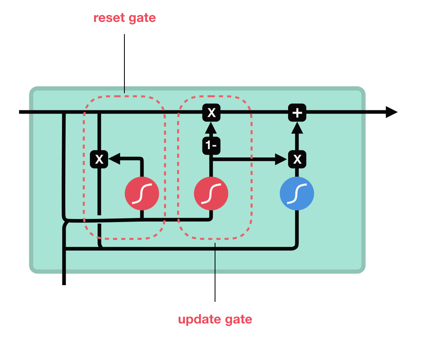

RNN 受限于短期记忆问题。因为在反向传播过程中，RNN 中存在梯度消失问题（梯度消失问题是指随着时间推移，梯度在传播时会下降，如果梯度值变得非常小，则不会继续学习），因此 RNN 网络也不能太深。如果一个序列足够长，则很难把信息从较早的时间步传输到后面的时间步。比如尝试处理一段文本来进行预测，RNN 可能在开始时就会遗漏重要信息。
比如 “I grew up in France… I speak fluent (French)” 要预测()中应该填哪个词时，跟很久之前的”France”有密切关系。
长短期记忆（Long Short-Term Memory，LSTM） 和 门控循环单元（Gated Recurrent Units，GRU） 是克服短期记忆问题提出的解决方案，它们引入称作“门（gate）”的内部机制，可以调节信息流。这些门结构可以学习序列中哪些数据是要保留的重要信息，哪些是要删除的。
比方说，我们在网上购物时喜欢浏览客户评价，你会记住大家对它“是好是坏性价比高”等大致评价，而不会去记住完整的一段评价。LSTM 和 GRU 的作用就是忘记不相关的信息，只保留重要的信息。
RNN 的工作原理
先回顾下 RNN 流程：
- 首先单词被转换成机器可读的向量
- 然后 RNN 逐个处理向量序列

在处理时，它把先前的隐藏状态传递给序列的下一步，其中隐藏状态作为神经网络记忆，它包含相关网络已处理数据的信息。

RNN 中每个 cell 单元是如何计算隐藏状态
首先，将输入和先前隐藏状态组合成一个向量，向量中含有当前输入和先前输入的信息。这个向量再经过激活函数 Tanh 后，输出新的隐藏状态，或网络记忆。

激活函数 Tanh
激活函数 Tanh 用于帮助调节流经网络的值，其输出值始终在区间 (-1, 1) 内。

以上就是 RNN 的主要构造，它的内部操作很少，使用的计算资源也少，但在适当情况下（如短序列分析）效果很好。
长短期记忆 LSTM
LSTM 的控制流程与 RNN 类似，它们都是在前向传播过程中处理传递信息的数据，区别在于 LSTM 单元的结构和运算有所变化。
LSTM 的核心概念为其单元状态和各种门结构。
单元状态 相当于能传输相关信息的通路，让信息在序列链中传递下去，这部分可看作是网络的“记忆”。理论上，在序列处理过程中，单元状态能一直携带着相关信息。因此，在较早时间步中获得的信息也能传输到较后时间步的单元中，这样能减弱短期记忆的影响。
门结构 用于添加或移除信息，不同神经网络都可通过单元状态上的门结构来决定去记住或遗忘哪些相关信息。LSTM 单元中有三种调节信息流的门结构：遗忘门、输入门 和 输出门。
下图是 LSTM 单元及其运算

图中的 3 个 sigmoid 函数代表 3 个门电路，上面一条主线是单元状态（cell state），前一时刻单元状态 ct-1进入，输出当前时刻单元状态 ct；下面一条线是隐藏状态（hidden state），前一时刻隐藏状态进入 ht-1，输出当前时刻隐藏状态 ht。
激活函数 Sigmoid
门结构中包含 Sigmoid 函数，它的输出区间是 (0, 1)，这有助于更新或忘记数据，因为任何数字乘以 0 都为 0，这部分信息会被遗忘。同样，任何数字乘以1都为相同值，这部分信息会完全保留。通过这样，网络能了解哪些数据不重要需要遗忘，哪些数字很重要需要保留。
遗忘门
遗忘门能决定应丢弃或保留哪些信息。先前隐藏状态的信息和当前输入的信息同时进入 Sigmoid 函数，输出值处于 0 和 1 之间，越接近 0 意味着越应该忘记，越接近 1 意味着越应该保留。

输入门
输入门用来更新单元状态。将先前隐藏状态的信息和当前输入的信息输入到 Sigmoid 函数，在 0 和 1 之间调整输出值来决定更新哪些信息，0 表示不重要，1 表示重要。
你也可将隐藏状态和当前输入传输给 Tanh 函数，并在 -1 和 1 之间压缩数值以调节网络，然后把 Tanh 输出和 Sigmoid 输出相乘，Sigmoid 输出将决定在 Tanh 输出中哪些信息是重要的且需要进行保留。

单元状态
这里已经具备足够信息来计算单元状态。
- 首先把先前的单元状态和遗忘向量逐点相乘，如果它乘以接近 0 的值，则意味在新的单元状态中可能要丢弃这些值
- 然后把它和输入门的输出值逐点相加，把神经网络发现的新信息更新到单元状态中，这样就得到了新的单元状态。

输出门
输出门能决定下个隐藏状态的值，隐藏状态中包含了先前输入的相关信息。
- 首先把先前的隐藏状态和当前输入传递给 Sigmoid 函数
- 接着把新得到的单元状态传递给 Tanh 函数
- 然后把 Tanh 输出和 Sigmoid 输出相乘，以确定隐藏状态应携带的信息
- 最后把隐藏状态作为当前单元输出，把新的单元状态和新的隐藏状态传输给下个时间步。

总结
遗忘门能决定需要保留先前状态中哪些相关信息，输入门决定在当前输入中哪些重要信息需要被添加，输出门决定了下一个隐藏状态。
每个 LSTM 模块的步骤如下
- 首先，我们连接了先前的隐藏状态和当前输入，这里定义为变量combine；
- 把combine变量传递到遗忘层中，以删除不相关数据；
- 再用combine变量创建一个候选层，用来保留可能要添加到单元状态中的值；
- 变量combine也要传递给输出层，来决定应把候选层中的哪些数据添加到新的单元状态中；
- 新的单元状态可根据遗忘层、候选层和输入层和先前的单元状态来计算得到；
- 再计算当前单元输出；
- 最后把输出和新的单元状态逐点相乘可得到新的隐藏状态。
对于整个时间序列，循环重复上面 LSTM 模块即可
LSTM 模块伪代码

门控循环单元 GRU
GRU 是 RNN 的另一类演化变种，与 LSTM 非常相似。GRU 去除了单元状态，而使用隐藏状态来传输信息。它只有两个门结构，分别是更新门和重置门。


更新门
更新门的作用类似于 LSTM 中的遗忘门和输入门，它能决定要丢弃哪些信息和要添加哪些新信息。
重置门
重置门用于决定丢弃先前信息的程度。
总结
这两部分组成了 GRU，它的张量操作较少，因此训练它比 LSTM 更快一点。在选择网络时很难判断哪个更好，研究人员通常会两个都试下，通过性能比较来选出更适合当前任务的结构。